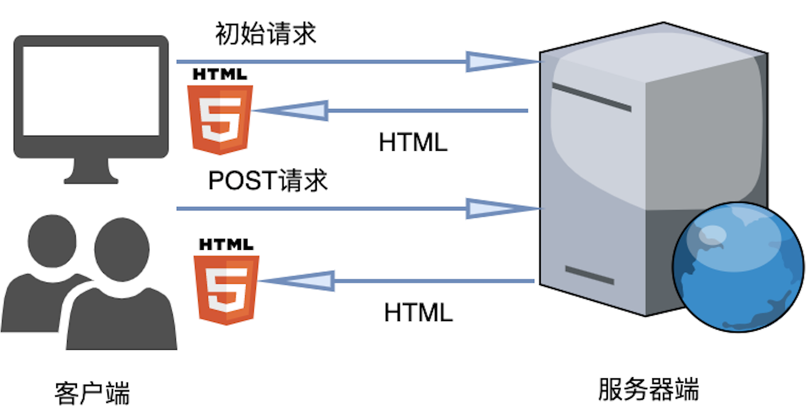

2 学习Angular需要什么基础¶
本章的内容是为了给入门Angular知识的读者准备的，主要是对学习Angular前的知识进行下梳理，帮助读者更快的入门Angular。针对有经验的前端开发者，本章的内容可以忽略，直接进入下一章的学习。
2.1 了解Web基础开发¶
在深入Angular之前，需要了解Web开发的基本概念。
2.1.1 客户端和服务器通信¶
Web应用程序基本上包括两台相互通信的计算机，它们被称为服务器和客户端。
客户端计算机可能是各种各样的设备，从智能手表到手机，从平板电脑到电脑。用户在客户端上使用Web浏览器与服务器（Web应用程序部署在其上面）进行交互。客户端（用户的计算机）与服务器进行通信，发送HTTP请求和接收结果。
服务器位于云端或数据中心，它会监听来自客户端发送来的HTTP请求，并返回结果。服务器还可以其他访问Web应用程序使用的数据，如后端数据库。
目前有两种类型的Web应用程序：运行在服务器端的Web应用程序和运行在客户端的Web应用程序（SPA）。
2.1.1.1 运行在服务器端的Web应用程序¶
运行在服务器端Web应用程序是指：应用程序的计算和运算逻辑在服务器上完成，客户端基本不参与计算，仅接收服务器返回的全部数据。当用户通过客户端向服务器发送一个请求，服务器执行一些操作并返回一个全新的HTML页面，作为响应显示在客户端上。服务器针对客户端的每次请求重新生成该Web页面的全部数据并将其发送回客户端的Web浏览器中，如图2-1所示。
{kind=link}
图2-1 运行在服务器端的Web应用程序
2.1.1.2 运行在客户端的Web应用程序¶
客户端的Web应用程序（也称为单页面应用程序，简称SPA）。许多Web应用程序仍然在服务器上执行，但是一些代码也同时在客户端（Web浏览器）上执行，以避免频繁地重新生成页面。
当用户在客户端中执行一个操作时，它向服务器发送一个请求，服务器执行一些操作并返回结果信息(通常是JSON格式的数据，而不是一个全新的HTML页面)。客户端代码侦听来自服务器的结果信息，并自行决定在不生成新页面的情况下如何呈现给客户。
客户端Web应用程序往往更具交互性和灵活性，因为它们可以更快地响应用户交互，它们不必等待发回的全部数据。只需要服务器返回一个局部的结果，而不是整个HTML页面。此体系结构如图2-2所示。
{kind=link}
图2-2 运行在客户端的Web应用程序
服务器端应该承担主要工作，业务逻辑及数据应该保留在服务器端，并在需要时供客户端调用或检索。 客户端（浏览器）可以使用更先进的异步技术来避免整个页面刷新，客户端仅胜任与用户的交互工作。
2.1.2 什么是HTML¶
HTML即超文本标记语言（HyperText Markup Language，简称：HTML），它是构建Web的基石，是一种用于创建Web的标准标记语言。HTML是一种基础技术，常与CSS、JavaScript一起被用于设计Web、Web应用程序以及移动应用程序的用户界面。Web浏览器可以读取HTML文件，并将其渲染成可视化网页。HTML描述了一个Web页面的结构语义随着线索的呈现，使之成为一种标记语言而非编程语言。
HTML允许嵌入图像和对象，并且可以用于创建交互式表单，它被用来结构化信息，如标题、段落和列表等等，也可用来在一定程度上描述文档的外观和语义。HTML的语言形式为尖括号包围的HTML元素（如<html>），浏览器使用HTML标签和脚本来诠释网页内容。
Angular中使用模板显示页面内容，而模板使用的就是HTML语言，掌握基础的HTML知识，有助于我们加快学习Angular技术。
2.1.3 什么是DOM文档¶
DOM即文档对象模型（Document Object Model，简称：DOM），它是HTML页面和XML文档的编程接口。DOM文档定义了访问和操作HTML页面的标准方法。
DOM文档提供了对HTML页面的结构化的表述，并定义了一种方式可以从程序中对该结构进行访问，从而改变HTML页面的结构、样式和内容。DOM文档将HTML页面解析为一个由节点和对象（包含属性和方法的对象）组成的结构集合。简言之，它会将HTML页面和脚本或程序语言连接起来。
一个HTML页面对应一个DOM文档。这个文档可以在浏览器窗口或作为HTML源码显示出来。DOM文档提供了对同一份HTML页面的另一种表现，存储和操作的方式。
2.1.4 HTML特性与DOM属性¶
当浏览器解析完HTML后，生成的DOM是一个继承自Object的常规JavaScript对象，因此我们可以像操作任何JavaScript对象那样来操作DOM对象。
Attribute属于HTML，可以是任意属性，赋值及取值使用setAttribute()和getAttribute()方法。
Property属于DOM，赋值或取值使用“.”操作符。
提醒
HTML中的attribute和DOM中的property，一般情况下都被称呼为“属性”。本书为了区分起见，我们分别称呼他们为：HTML特性（attribute）与DOM属性（property）。
2.1.4.1 HTML特性与DOM属性的关系¶
当我们为HTML元素设置特性，例如：
<input id="name" value="Murphy"/>
上述代码书写了一个input标签，并给他定义了2个特性 (id和value)。当浏览器解析这段代码的时候，会把HTML源码解析为DOM对象，确切的说是解析为 HTMLInputElement对象。在DOM对象中，用户可以通过该对象找到对应的id和value属性。简单的说，就是当浏览器解析HTML网页时，将HTML特性映射为了DOM属性。
2.1.4.2 HTML特性与DOM属性的区别¶
HTML特性与DOM属性的区别主要有：
并非所有的HTML特性都可以生成DOM属性，如HTML中的colspan特性，DOM上没有对应的属性。HTML也可以添加非标准的特性，例如：
<input id="name" value="Murphy" local="wuhan" />
当HTML特性特性映射为DOM属性时，只映射标准特性，访问非标准特性将得到“undefined”值。
const el = document.getElementById('local') // 试图通过getElementById()方法获得DOM对象 el.local === undefined // 由于local特性是非标准特性，因此无法映射为DOM属性
非标准HTML特性并不会自动映射为DOM属性。可以使用“data-”开头的HTML特性时，会映射到DOM的dataset属性里。
el.setAttribute('data-myName', 'Murphy'); // 将myName属性的值设置为Murphy el.dataset.myName === 'Murphy' // 比较dataset的myName属性值是否等于Murphy
HTML特性是不区分大小写的，而DOM属性是区分大小写的，因此以下代码的效果是一样的：
el.getAttribute('id') // 小写id el.getAttribute('ID') // 大写ID el.getAttribute('iD') // 小写i大写D
当修改HTML特性的值时，DOM属性的值也会更新；但是修改DOM属性的值后，HTML特性的值却还是原值。
el.setAttribute('value', 'Jack'); // HTML特性的值 el.value === 'Jack' // DOM属性的值也更新了 el.value = 'newValue'; // 修改DOM属性的值 el.getAttribute('value')) === 'Murphy' // HTML特性的值没有更新
2.1.5 掌握CSS的基础知识¶
CSS即层叠样式表(Cascading Style CSS)是一种用来表现HTML文件样式的计算机语言。CSS不仅可以静态地修饰网页，还可以配合各种脚本语言动态地对网页各元素进行格式化。 CSS 能够对网页中元素位置的排版进行像素级精确控制，支持几乎所有的字体字号样式，拥有对网页对象和模型样式编辑的能力。
在CSS中，通常把HTML中的标签元素大体分为3种不同的类型：块状元素、行内元素和内联块状元素。理解他们的区别有助于CSS的学习。
2.1.5.1 块状元素¶
HTML中的块状元素主要有:
<div>、<p>、<h1>...<h6>、<ol>、<ul>、<dl>、<table>、<address>、<blockquote>、<form>
块状元素的特点有：
每个块级元素都从新的一行开始，并且其后的元素也另起一行；
元素的高度、宽度、行高以及顶和底边距都可设置；
元素宽度在不设置的情况下，是它本身父容器的100%（和父元素的宽度一致），除非设定一个宽度；
行内元素转换成块状元素：
/* 使a行内元素具有块状元素特点 */ a { display:block; }
2.1.5.2 行内元素¶
HTML中的行内元素主要有:
<a>、<span>、<br>、<i>、<em>、<strong>、<label>、<q>、<var>、<cite>、<code>
行内元素的特点有：
和其他元素都在一行上；
元素的高度、宽度及顶部和底部边距不可设置；
元素的宽度就是它包含的文字或图片的宽度，不可改变；
块状元素转换为行内元素
/* 块状元素div转换为行内元素 */ div { display:inline; }
2.1.5.3 行内块状元素¶
HTML中的行内块状元素主要有:
<img>、<input>
行内块状元素的特点有：
就是同时具备行内元素、块状元素的特点；
和其他元素都在一行上；
元素的高度、宽度、行高以及顶和底边距都可设置。
2.1.5.4 CSS属性¶
CSS中有很多属性，每个属性有各自的含义。例如：color是文本的颜色属性，而text-indent则规定了段落的缩进。 学习CSS属性时，请注意下面的几个方面：
属性的合法属性值。如段落缩进属性text-indent只接受一个表示长度的值，而背景图案background中的image属性可以接受的值有2种，一种是表示图片位置的链接值，另一种用none表示不用背景图案。
属性的默认值。
属性所适用的HTML元素。正如HTML元素有多种，CSS属性只适用于特定的类别元素，比如white-space属性就只适用于块级元素。
属性的值是否被下一级继承。
如果该属性能取百分值，那么该百分值所相对的标准是什么。如margin属性可以取百分值，它是相对于margin所存元素的容器的宽度。
2.1.5.5 CSS度量单位¶
CSS度量单位主要分为两种；绝对单位和相对单位：
绝对单位，不会因为其他元素的尺寸变化而变化。
相对单位 ，没有一个固定的度量值，而是由其他元素尺寸来决定的相对值。
常见的度量单位有：
px（像素），指的是屏幕上显示的最小单元；
em单位是一个相对度量单位，它的计算方式是当前元素的font-size的px值乘以em前面的数字；
rem单位和em单位很类似，区别是他是相对于HTML根元素的font-size值去计算的；
vw和vh，视窗（viewpoint）的宽度和高度，1vw=视窗宽度的1%，1vh=视窗高度的1%；
%，百分比单位；
2.1.5.6 CSS选择器¶
CSS选择器用于选择需要添加样式的HTML元素。使用CSS选择器的原则是：
准确的选到要控制的标签；
使用最合理优先级的选择器；
HTML和CSS代码尽量简洁美观。
CSS选择器的种类很多，按照选择器的效率从高到低的排序如下：
id选择器（#id）
类选择器（.classname）
标签选择器（div，h1，p）
相邻选择器（h1+p）
子选择器（ul > li）
后代选择器（li a）
通配符选择器（*）
属性选择器（a[rel=”external”]）
伪类选择器（a:hover，li:nth-child）
2.1.6 实战CSS布局¶
在实际项目中，WEB页面元素的布局非常重要，大到页面的整体风格，小到一个文本框的对齐，这些都离不开CSS的布局，下面分别介绍2种实际工作中常见的布局应用。
2.1.6.1 [示例 css-ex100] 元素居中对齐¶
新建index.html文件，并将其更改为以下内容：
<!DOCTYPE html> <html lang="en"> <head> <meta charset="UTF-8"> <meta name="viewport" content="width=device-width, initial-scale=1.0"> <title>Document</title> <style> .center { margin: auto; /* div外的左右空间对称，也就是居中对齐 */ width: 50%; /* div宽度占屏幕框的50% */ border: 3px solid green; /* div边框为3像素框的绿色实线条 */ padding: 10px; /* div内空间左右分别留10像素空白 */ } .china { text-align: center; /* div内文本居中对齐 */ background-color: yellowgreen; /* 定义div的背景色 */ } </style> </head> <body> <div class="center"> <div class="china">学习Angular</div> </div> </body> </html>
用浏览器打开index.html文件，观察页面，显示效果如图2-3所示。
{kind=link}
在上面的示例css-ex100中，完成了以下内容：
HTML中的body里面定义了2个嵌套的div元素，分别引用了2个不同的样式：center和china；
center样式里面最最重要的就是margin，margin的4个值分别对应：上右下左。也就是说
margin: auto;其实相当于margin: auto auto auto auto;，margin: 0 auto;相当于margin: 0 auto 0 auto;。
2.1.6.2 [示例 css-ex200] 元素自适应屏幕及自动换行¶
新建index.html文件，并将其更改为以下内容：
<!DOCTYPE html> <html> <head> <style> .flex-container { display: flex; /* 生成一个块状元素 */ justify-content: center; /* 水平居中对齐 */ background-color: DodgerBlue; } .flex-container>div { background-color: #f1f1f1; width: 100px; margin: 10px; text-align: center; line-height: 75px; font-size: 30px; } .flex-container-wrap { display: inline-flex; /* 生成一个弹性的行内容器 */ flex-flow: row wrap; /* 按行排列，超过屏宽后，自动换行 */ justify-content: center; /* 水平居中对齐 */ align-items: center; /* 垂直居中对齐 */ } .flex-container-wrap>div { background-color: #f1f1f1; width: 100px; margin: 10px; text-align: center; line-height: 75px; font-size: 30px; } </style> </head> <body> <div class="flex-container"> <div>1</div> <div>2</div> <div>3</div> <div>4</div> <div>5</div> <div>6</div> <div>7</div> <div>8</div> <div>9</div> <div>10</div> </div> <div class="flex-container-wrap"> <div>1</div> <div>2</div> <div>3</div> <div>4</div> <div>5</div> <div>6</div> <div>7</div> <div>8</div> <div>9</div> <div>10</div> </div> </body> </html>
用浏览器打开index.html文件，观察页面，显示效果如图2-4所示。
{kind=link}
在上面的示例css-ex200中，完成了以下内容：
flex-container样式里面选择
display: flex;，表示把整行生成一个块状元素，该元素随着屏幕的拉伸自动适应缩放比例，不换行；flex-container-wrap样式里面选择
display: inline-flex;，表示把整行生成一个弹性的行内容器，该容器内的元素随着屏幕的拉伸自动换行显示。
2.2 掌握Node和npm基础¶
Angular的开发与Node和npm紧密相连。Angular工程及Angular CLI工具均是基于Node.js环境的，关于这部分的知识，本书作为独立的章节介绍。
2.3 学习Typescript知识¶
Angular是使用Typescript语言进行开发的，因此掌握Typescript知识势在必行，本书有专门章节介绍Typescript知识。
2.4 了解Web组件的知识¶
基于组件的开发可以使关注点清晰分开，并允许用户构建高度可重用的代码。Angular组件设计就是采用MVVM模式。
2.4.1 什么是MVVM模式¶
MVVM模式是Model-View-ViewMode模式的简称：
M（Model 模型）：模型对应的就是模型数据，Angular中Model用来存放视图层V所需要的基本数据，以及从后台获取的数据；
V（View 视图）：它专注于界面的显示和渲染，Angular中视图就是组件模板；
VM（ViewModel 视图模型）：视图模型的作用是用来连接V视图层和M数据模型层的桥梁，VM是将M中的数据提供给V用于展示，同时将V中用户改变的数据同步到M中。
通过这三部分实现UI逻辑、呈现逻辑和状态控制、数据与业务逻辑的分离。
2.4.2 MVVM模式的优点¶
MVVM模式的优点有下面这些：
双向绑定技术。当Model变化时，View-Model会自动更新，View也会自动变化；
低耦合。各层职责分开，可以各干各的事情，如：View可以独立于Model变化和修改；
可重用性。视图的计算逻辑放在ViewModel里面，让很多View重用这段计算逻辑；
独立开发。开发人员可以专注与业务逻辑和数据的开发(ViewModel)，设计人员可以专注于界面(View)的设计；
测试方便。可以针对ViewModel来对界面(View)进行测试。
2.5 选择适合的开发工具¶
集成开发环境（Integrated Development Environment，简称：IDE）是用于提供程序开发环境的应用程序，一般包括代码编辑器、编译器、调试器和图形用户界面等。
进行Angular开发时，需要选择一款针对TypeScript友好的代码编辑器，该代码编辑器默认情况下（或通过插件）支持TypeScript语言开发，并且考虑到也要兼容JavaScript开发，Visual Studio Code，Atom或WebStorm这3款编辑器似乎是当今的理想选择。 无论用户选择那款，目的是使Angular开发变得更加方便和容易。
本书将使用Visual Studio Code，因为它非常好用，并且免费。 笔者选择Visual Studio Code这个工具的原因是：它是微软开发的开源源代码编辑器，可用于Windows、Linux和macOS。它支持调试代码，git插件，语法高亮提示，代码提示，代码重构。这个编辑器由编写TypeScript的作者编写，所以能很好兼容于TypeScript。它同样适用于编写JavaScript、Java代码等，且相对简洁。
2.6 如何学习Angular¶
学习是个漫长的过程，Angular的学习过程也一样。读者在开始接触Angular之前，是位Java后端开发工程师，少有接触前端技能，对日益月薪的前端技术名词感到茫然，不知道从哪里开始学起，一路走了不少弯路。鉴于此，结合自身的学习经验，笔者站在零基础前端技能的角度，给读者分享下如何学习Angular：首先，你需要了解Web，Node.js基础，接着是TypeScript知识，幸好这些都是本书已经给读者准备的入门Angular的内容。本书的内容分别针对不同层次的读者设计的，边读边实践书中的示例，只有反复的实践，才能让人映像深刻。其次是选择有效的学习策略，如记下你犯的错误，针对错误反复的实践。最后就是超越自己，多读Angular的资源，以及Angular API，它会使你更加精通Angular。
2.7 小结¶
本章主要是带领读者对入门Angular前的知识进行了梳理，分别介绍了Web基础开发，HTML基础，IDE集成开发环境，以及如何学习Angular。